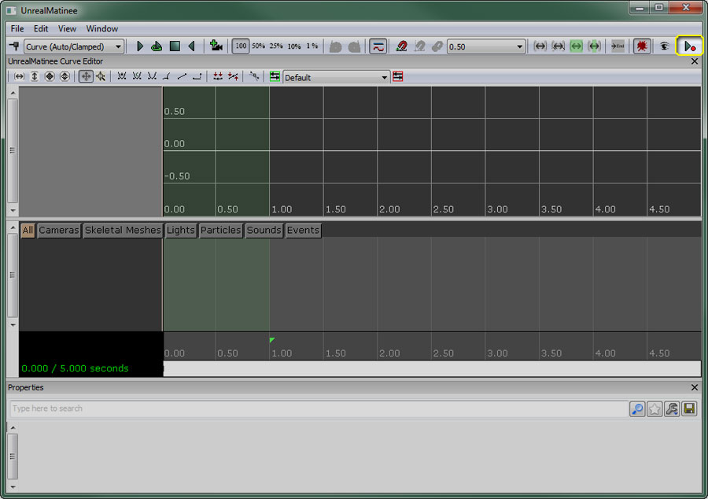
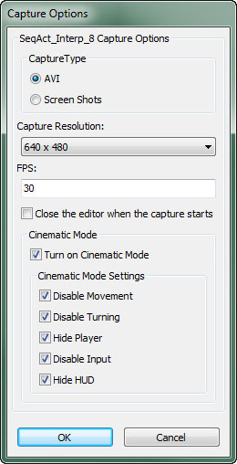

UDN
Search public documentation:
MovieCaptureKR
English Translation
日本語訳
中国翻译
Interested in the Unreal Engine?
Visit the Unreal Technology site.
Looking for jobs and company info?
Check out the Epic games site.
Questions about support via UDN?
Contact the UDN Staff
日本語訳
中国翻译
Interested in the Unreal Engine?
Visit the Unreal Technology site.
Looking for jobs and company info?
Check out the Epic games site.
Questions about support via UDN?
Contact the UDN Staff
무비 캡처
문서 변경내역: Filip Krstevski 작성/업데이트. 홍성진 번역.
개요
게임내 무비 캡처
UDK.exe UDN_FeaturesDemo -BENCHMARK -FPS=30
MovieCaptures 디렉토리에 들어갑니다. UDK 사용자의 경우는 다음과 비슷합니다:
C:\UDK\[UDK 버전]\UDKGame\MovieCaptures
게임내 캡처 명령
무비 캡처는 아래와 같은 콘솔 명령이나 키보드 단축키를 사용하여 시작하거나 중지할 수 있습니다:| 기능 | 콘솔 명령 | 키보드 단축키 |
|---|---|---|
| 캡처 시작 | startmoviecapture | Alt + R |
| 캡처 중지 | stopmoviecapture | Shift + R |
마티네 무비 캡처

이번에는 다음과 같은 대화창이 뜹니다:
- Capture Type 캡처 타입
- 캡처 출력을 연속 이미지로 할지 비디오 파일로 할지 지정합니다.
- AVI AVI - 게임 설치 폴더 내
MovieCaptures폴더에 저장되는 비디오 파일로 캡처를 출력합니다. - Screen Shots 스크린샷 - 게임 설치 폴더 내
ScreenShots폴더에 저장되는 연속 이미지 파일로 캡처를 출력합니다.
- Capture Resolution 캡처 해상도
- 마티네를 캡처할 해상도를 지정합니다. 해상도가 클 수록 캡처 크기도 커 집니다.
- FPS FPS
- 마티네를 캡처할 FPS(초당 프레임율) 입니다.
- Close the editor when the capture starts 캡처가 시작되면 에디터 닫기
- 켜면, 캡처가 시작될 때 에디터가 닫힙니다.
- Turn on Cinematic Mode 시네마틱 모드 켜기
- 켜면, 캡처가 시작될 때 게임이 아래 세팅에 따라 시네마틱 모드로 들어갑니다.
- Disable Movement 이동 끄기 - 체크하면 플레이어는 이동하지 않습니다.
- Disable Turning 회전 끄기 - 체크하면 플레이어는 회전하지 않습니다.
- Hide Player 플레이어 숨김 - 체크하면 플레이어의 메시가 표시되지 않습니다.
- Disable Input 입력 끄기 - 체크하면 모든 플레이어는 입력을 받지 않습니다.
- Hide HUD HUD 숨김 - 체크하면 HUD 가 표시되지 않습니다.